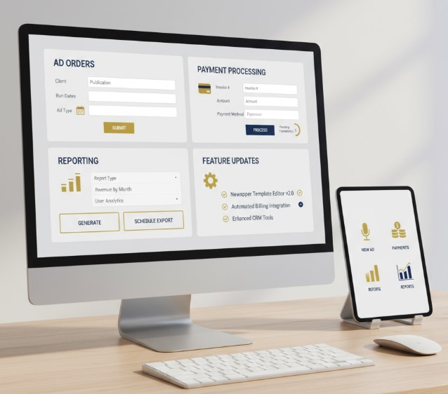

Advertising Management Application
Advertising Management Application

Supported and enhanced a critical advertising order system used by thousands of newspapers nationwide.
Supported and enhanced a critical advertising order and management system used by thousands of newspapers nationwide. The work included backend stability improvements, ACH payment integration, and migration planning to a modern cloud-hosted platform.
Company: Quoin
Duration: May 2019 – Feb 2024
Platform: Web application (ad order & delivery system)
Tools: Redmine, Java, JavaScript, MySQL, Excel, AWS
Delivery: Agile (Scrum / Kanban)
Link: OneSystem (advertising)
Work Done
- Led backend server upgrades to reduce downtime and improve system stability.
- Managed ACH payment integrations and implemented feature enhancements based on stakeholder feedback.
- Directed Agile delivery and prioritized work using Redmine and Excel-based reporting.
- Assisted with migration planning to a modern AWS-hosted infrastructure.
- Provided training and adoption support for business clients and users.